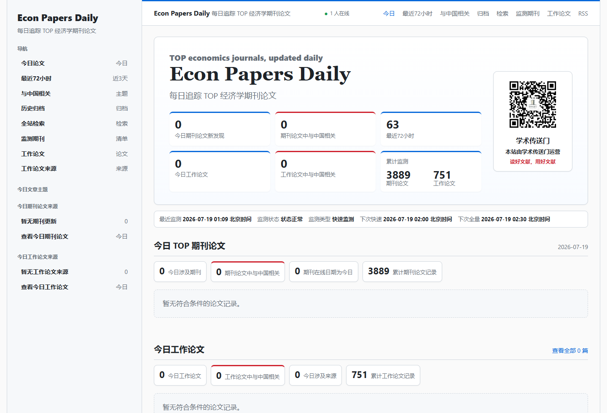
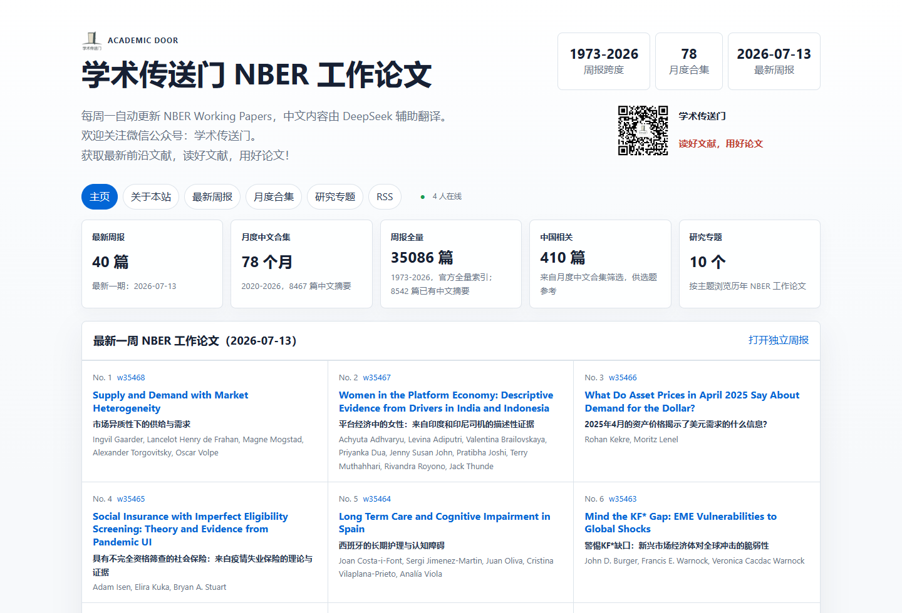

IZA DISCUSSION PAPERS · 07.18
Discipline Beyond Suspensions: Racial/Ethnic Disparities Across the Spectrum of Disciplinary Actions
学校纪律处分中的族群差异，是否远不止“停学”这一项结果？
READING / 现在值得读
从持续更新的文献池中，按阅读情境整理为三个入口。
IZA DISCUSSION PAPERS · 07.18
学校纪律处分中的族群差异，是否远不止“停学”这一项结果？
如何用面板数据识别同伴效应？
环境态度如何在家庭代际间传递？
APPLIED ECONOMICS · 07.17
数字技术是否提高灵活就业者的养老保险参与？
LAND USE POLICY
如何重建 1850 年以来中国耕地空间分布？
PUBLIC GOVERNANCE
地方保护主义如何影响食品安全信息公开？
NBER W35468 · 07.13
市场异质性如何改变供需识别？
NBER W35467 · 07.13
印度与印尼平台司机中的性别差异是什么？
NBER W35466 · 07.13
资产价格如何揭示美元需求？
PUBLICATIONS / 文献项目
同一个编辑标准，两种时间尺度：每日发现期刊与工作论文，每周完整整理 NBER。

PROJECT 01 · DAILY
每天发现值得关注的经济学期刊论文与工作论文。
PROJECT 02 · WEEKLY
每周完整追踪 NBER Working Papers，并提供中文整理与历史索引。

EDITORIAL WORKFLOW
EDITORIAL PRINCIPLES
保留论文来源、编号、日期与原文入口。
以稳定工作流维护每日与每周文献项目。
中文整理服务于发现与理解，不替代论文原文。
ABOUT ACADEMIC DOOR
Academic Door / 学术传送门是面向中文读者的非盈利学术交流项目，持续追踪经济学期刊、工作论文与中国相关研究。
中文内容由 AI 辅助翻译与人工整理，可能存在误差。论文原文、版本与版权信息请以原始来源为准。

微信公众号